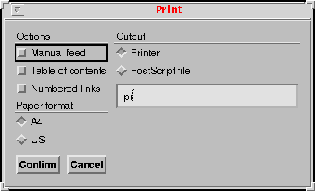
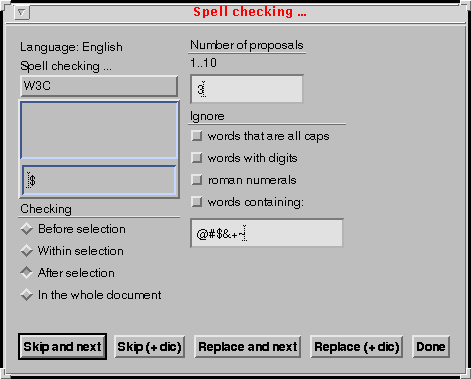

ThotLib V3
Date: 3 February, 2004
The Thot tool kit is a comprehensive set of editing functions that can be used for building applications that handle structured documents in the Unix / X Window environment. It is constituted by a set of C libraries that can be linked to any program. It allows application programs to perform the same kind of operations as a user working with a structured document editor. Typically, an application can use the tool kit for creating new documents, for modifying existing documents, for extracting information from documents, for displaying (parts of) documents, etc. The tool kit can be used either for automatic manipulations performed solely by a program or for allowing a human user to cooperate with a program that processes documents. In this latter case, it uses OSF/Motif for implementing the user interface.
The functions provided by the tool are based on the Thot document model. Documents produced with the tool kit can be stored as Unix files in the same standard format as documents produced by the Thot editor (pivot format indicated by the .PIV suffix). Thot editor is also able to save documents in other formats and obviously this capability is provided by the tool kit. Thot documents can be processed by all tools available in the Thot environment and by all applications developed with the tool kit. The Thot environment includes in particular flexible tools for editing, printing and translating documents.
In the editing tool kit, a document is primarily considered as an abstract structure that assembles typed elements. Examples of elements types are titles, chapters, sections, paragraphs, lists, notes, etc. The structure itself is basically a hierarchy of such elements; it is called an abstract tree. The lowest level elements (also called basic elements) represent the actual contents of the document: character stings, mathematical symbols, pictures, and graphical elements. In addition to this tree structure, non-hierarchical links (also called references) relate elements independently of the tree structure, thus representing cross- references and other types of hypertext links.
As the type of an element is not always sufficient for completely representing the role of that element in the document logical structure, the notion of logical attribute has been introduced. A logical attribute is information associated with an element that adds semantics to that element.
The logical structure of a document is constrained by a model, called a structure schema. Several structure schemas can be used, one for each type of document. A structure schema defines a document type, by specifying all types of elements that can be used in the logical structure of a document of that type. It also specifies the attributes that can be associated with each type of element and all structural relationships that can be set between elements. Structure schemas are written in a specific declarative language, called S. A compiler for the S language is available, so that new document types can be defined, according to the requirements of applications.
The graphical appearance of a document (also called presentation) is derived from its logical structure and is generically specified by a presentation schema. A presentation schema is associated with a structure schema and specifies the appearance of documents of the type defined by the structure schema. For each type of element defined in the structure schema, the presentation schema contains a set of presentation rules that define the style and the format of the logical elements. Using these rules, the system can then produce the graphical representation of a document, on the basis of its logical structure.
Presentation schemas are written in the language P and a compiler for that language is available. New presentation schemas can then be developed. Notice that several presentation schemas can be associated with the same structure schema, thus defining alternative presentations for the same type of document.
In addition, each presentation schema may define different views. A view is a subset of the document that can be formatted in a different way and displayed separately: each view is presented in a different window on the screen.
For balancing this rigid principle of presentation with a certain degree of flexibility, it is possible to associate with some element instances a special type of attribute, called specific presentation rule. A specific presentation rule is a presentation rule of the same kind as those of the presentation schema, but it applies only to the element instance with which it is associated, not to all elements of that type.
With that approach to document representation, documents are first specified generically, by writing structure schemas and presentation schemas. Then end-users and application programs can manipulate document instances very simply, by referring to the schemas. Most of the work consists in handling a logical structure consistent with the chosen structure schema and in handling the contents (the basic elements) of that structure. All the rest, especially formatting and displaying, is done by the tool kit. In addition, the logical structure is a very efficient help for moving across the document and for locating the parts to be modified.
The tool kit contains about 200 functions. For the sake of clarity, they are presented by groups, each group focusing on a different aspect of documents.
Each section presenting a group of functions is divided into subsections which correspond to the following four broad categories:
The Thot editing tool kit is accessed through an API that is defined in sections 6 to 9. The tool kit takes the form of two libraries for editing documents. Each library is suited to a different type of application and an application uses only one of the two editing libraries: the second library includes the first one.
The first library allows an application to handle the logical structure and the contents of Thot documents in automatic mode. This subset of the tool kit, called Thot Kernel, does not produce the graphical aspect of documents. It does not provide either any service for the user interface. It is typically designed for applications performing automatic operations on the logical structure and contents of documents without direct manipulation by a user.
The last five groups of functions (those handling views, selections, and user interface to the editor) are not part of that library. Sections 18 to 9 of that document do not concern that library.
The second library, called Thot Editor, includes all facilities provided by the Kernel, with the same interface, and provides additional services for displaying the graphical aspect of documents. It also contains the whole Thot editor with its user interface. All editing functions of Thot can be accessed by the user and by application programs. The Thot Editor tool kit is typically intended to interactive applications that handle documents under the control of a user and that add new functions to the editor.
All groups of functions presented in this document are part of that library. Functions that are also part of the Thot Kernel have exactly the same interface when used in the context of Thot Editor. The only difference is that, in the case of Thot Kernel, they do not display anything, and that, in the case of Thot Editor, some of them (namely constructors and modificators) modify the picture displayed on the screen. As a consequence, application programs that have been developed for automatic processing can be reused in the context of an interactive application without any change: the Thot Editor automatically takes in charge all displaying problems that are not handled by the Thot Kernel.
Almost all functions of the tool kit can detect errors. In that case the function is not performed and an error code is set. The tool kit provides the application program with the function TtaGetErrorCode for accessing the error code. That function returns the completion code of the last tool kit function called by the application. Only the completion code of the most recently called function is available. A 0 completion code means a successful operation; other values are defined in files application.h.
In addition to the error code returned to the application program by the function TtaGetErrorCode, the tool kit prints an error message on the standard error file stderr whenever an error is raised. Error messages are printed by default, but the application program can ask the tool kit to stop printing these messages, by calling the function TtaSetErrorMessages.
Each group of functions has an associated include file. Available include files are: application.h, document.h, tree.h, content.h, attribute.h, reference.h, language.h, presentation.h, view.h, selection.h, interface.h. These files must be included in each module of the application program that calls at least one function of the corresponding group. They contain the interface definition of the functions and the types and constants (#define) used by these functions.
Whenever a function may return a long character string (20 characters or more), the buffer must be provided by the application when calling the function. If the buffer is too small, the tool kit raises an error. But the size of the character string can generally be asked before calling such functions, by using another function.
Functions in the Thot API belong to different categories regarding their arguments and return value. The naming scheme follows these categories:
The tool kit performs operations on various entities, such as schemas, documents, elements, attributes, views, etc. Each entity is identified by a unique identifier which is assigned by Thot. Therefore, an application program must get that identifier before manipulating any entity. An identifier can be obtained by constructors, accessors and locators.
The following types are used by the editing tool kit:
SSchemas, Elements, Attributes, and PRules are pointers (addresses), whereas Documents and Views are integers. Language is an unsigned character. Both ElementType and AttributeType are structures containing a SSchema (the schema that defines the corresponding element type or attribute type) and an integer which is the number of the element type or attribute type in that structure schema. Structure ElementType is defined in file tree.h:
typedef struct _ElementType
{
SSchema ElSSchema;
int ElTypeNum;
} ElementType;
Structure AttributeType is defined in file attribute.h:
typedef struct _AttributeType
{
SSchema AttrSSchema;
int AttrTypeNum;
} AttributeType;
In addition some integers are used for exchanging parameters between the application program and the tool kit. Available parameters with their possible values are:
Group application contains the functions for managing the tool kit API. These functions require that file application.h be included in the module that calls them.
Applications generated by an interface schema EDITOR.A don't have to call these functions.
Initializes the Thot editing tool kit for an application. This function must be called before any other function of the tool kit.
void TtaInitialize(char *applicationName)
Quits the Thot tool kit. No other function of the tool kit can then be called by the application.
void TtaQuit()
Initialize the Thot Registry. This is done by default by TtaInitialize. On
Unix platforms the Registry is physically stored in the Thot.ini
file, on Windows platforms the native Registry is used.
void TtaInitializeAppRegistry(char *applicationName)
Commit the changes made to the Thot Registry. This is done by default by TtaQuit.
void TtaSaveAppRegistry()
Group application contains the functions for managing the tool kit API. These functions require that file application.h be included in the module that calls them.
Allocates dynamically a buffer of a specific size.
char *TtaGetMemory(int size)
Frees the memory allocated to a buffer by TtaGetMemory.
void TtaFreeMemory(char *buffer)
Reads an entry from the Thot Registry. It returns a non-modifiable string associated to the name given as parameter. Thot first looks for a specific value associated to the current application, and if not found try to find one in the "thot" section. Hence settings saved in the "thot" section are shared by all applications based on the Thot library, but can be refined to fit each application specific needs. If no value is found for the requested entry, the function returns NULL.
char *TtaGetEnvString(const char *name)
Reads an entry from the Thot Registry. It returns a non-modifiabledefault string associated to the name given as parameter. Thot first looks for a specific value associated to the current application, and if not found try to find one in the "thot" section. Hence settings saved in the "thot" section are shared by all applications based on the Thot library, but can be refined to fit each application specific needs. If no value is found for the requested entry, the function returns NULL.
char *TtaGetDefEnvString(const char *name)
Reads an entry from the Thot Registry. It returns the integer value associated with the name given as a parameter. Thot first looks for a specific value associated to the current application, and if not found try to find one in the "thot" section. Hence settings saved in the "thot" section are shared by all applications based on the Thot library, but can be refined to fit each application specific needs. The function returns either TRUE or FALSE, depending on whether the the registry entry exists or not.
ThotBoolTtaGetEnvInt(const char *name, int *value)
value: value of the entry.
Reads an entry from the Thot Registry. It returns the default integer value associated with the name given as a parameter. Thot first looks for a specific value associated to the current application, and if not found try to find one in the "thot" section. Hence settings saved in the "thot" section are shared by all applications based on the Thot library, but can be refined to fit each application specific needs. The function returns either TRUE or FALSE, depending on whether the the registry entry exists or not.
ThotBoolTtaGetDefEnvInt(const char *name, int *value)
value: value of the entry.
Reads an entry from the Thot Registry. It returns the ThotBool value associated with the name given as a parameter. Thot first looks for a specific value associated to the current application, and if not found try to find one in the "thot" section. Hence settings saved in the "thot" section are shared by all applications based on the Thot library, but can be refined to fit each application specific needs. The function returns either TRUE or FALSE, depending on whether the the registry entry exists or not.
ThotBoolTtaGetEnvBoolean(const char *name, ThotBool *value)
value: value of the entry.
Reads an entry from the Thot Registry. It returns the default ThotBool value associated with the name given as a parameter. Thot first looks for a specific value associated to the current application, and if not found try to find one in the "thot" section. Hence settings saved in the "thot" section are shared by all applications based on the Thot library, but can be refined to fit each application specific needs. The function returns either TRUE or FALSE, depending on whether the the registry entry exists or not.
ThotBoolTtaGetDefEnvBoolean(const char *name, ThotBool *value)
value: value of the entry.
TtaSkipBlanks skips all spaces, tabs, linefeeds and newlines at the beginning of the string and returns the pointer to the new position.
ThotBool TtaIsBlank (char *ptr);
TtaSkipBlanks skips all spaces, tabs, linefeeds and newlines at the beginning of the string and returns the pointer to the new position.
char *TtaSkipBlanks (char *ptr)
Indicates to the tool kit whether error messages must be printed or not.
void TtaSetErrorMessages(int on)
Set an entry in the Thot Registry for the current application.
void TtaSetEnvString(const char *name, const char *value, int overwrite)
value: value associated to the entry.
overwrite: should we overwrite an existing entry ?
Sets the default value of an entry in the Thot Registry for the current application.
void TtaSetDefEnvString(const char *name, const char *value, int overwrite)
value: value associated to the entry.
overwrite: should we overwrite an existing entry ?
Set an entry in the Thot Registry for the current application.
void TtaSetEnvInt(const char *name, const int value, int overwrite)
value: value associated to the entry.
overwrite: should we overwrite an existing entry ?
Set an entry in the Thot Registry for the current application.
void TtaSetEnvBoolean(const char *name, const ThotBool value, int overwrite)
value: value associated to the entry.
overwrite: should we overwrite an existing entry ?
Returns the identifier of the current version of the Thot eRediting tool kit.
char *TtaGetVersion()
Returns the error code set by the last call to the Thot editing tool kit. See file application.h for the possible values.
int TtaGetErrorCode()
Returns a pointer to the message text for a given error code.
char *TtaGetStrError(int errorCode)
The functions described in this section require that file interface.h be included in the module that calls them. They are available only in the Thot Editor library.
This function reserves a set of reference for creating dialogue elements (forms, menus, submenus, labels, etc.) and specifies the procedure that is called back when the user activates these dialogue elements.
Dialogue elements have to be created by the application using references between the "base" value returned by this function and the value "base+numberOfRef-1". So, this function must be called first.
It is possible to define different sets of dialogue elements by calling
this function more than one time with different
callbackProcedure procedure in the same application.
The callbackProcedure procedure declared is called for each
event concerning these specific dialogue items. It receives three parameters:
the dialogue item reference, the data type, and the data value:
void callbakProcedure(reference, datatype, data)
int reference;
int datatype;
char *data;
int TtaSetCallback(void (*callbackProcedure) (), int numberOfRef)
numberOfRef: the nmber of reference reserved.
numberOfRef specific dialogue
elements to be created.This function manages all Thot and Motif pending events. The application have to call this function to allow user's interactions and display updates to be managed during long treatments.
void TtaHandlePendingEvents()
This function processes one event within Thot and Motif. The application which controls a local loop of events have to call this function to allow managment of specific Thot and Motif events.
void TtaHandlePendingEvents(XEvent *event)
Adds a new button into the document view button bar. This function must specify a valid view of a valid document. The procedure parameter gives the call back procedure that will be run when user select the button. This procedure will receive two parametrers: the document and the view concerned.
An example of callback procedure is.
void callback_procedure (document, view)
Document document;
View view;
{
....
}
If the icon parameter in None, a space button is generated and the callback procedure is ignored. The parameters type and state are only used by on Windows platforms.
int TtaAddButton(Document document, View view, ThotIcon icon, STRING functionName, STRING info, void (*procedure) (), BYTE type, ThotBool state)
view: the concerned view.
icon: the pixmap of the new button or None,.
functionName: the internal name of the function used to connect shortcuts,.
info the text displayed when the cursor stays on the button,.
procedure: procedure to be executed when the button is selected by the user or NULL.
type: it could be TBSTYLE_BUTTON or TBSTYLE_CHECK.
state: is TRUE if the button is in an active state,.
Adds a new text-zone into the document view commands. This function must
specify a valid view of a valid document. The editable parameter indicates
that user can edit this text-zone. The procedure parameter gives the call
back procedure that will be run when user changes the text-zone: the user
press the Return key. This procedure will receive two
parametrers: the document and the view concerned.
An example of callback procedure is.
void callback_procedure (document, view)
Document document;
View view;
{
....
}
If the text-zone is not editable the procedure have to be NULL.
int TtaAddTextZone(Document document, View view, char *label, ThotBool editable, void (*procedure) ())
view: the concerned view.
label: the label of the text-zone.
editable: True is user can edit the text-zone.
procedure: procedure to be executed when the text is modified by the user.
Waits for a click from end-user and returns the element and document selected. If the user clicks out of any document view, the returned values are null.
void TtaClickAnElement(Document document, Element element)
element: the element selected by the user or 0.
This function changes the button icon. This function must specify a valid view of a valid document and a valid button index.
void TtaChangeButton(Document document, View view, int buttonIndex, ThotIcon icon, ThotBool state)
view: the concerned view.
buttonIndex: the button index, numbered from 1 to n.
icon: the pixmap of the new button or None.
state: TRUE if the button is an active button..
This function gets the text to be displayed in the text-zone. This function must specify a valid view of a valid document and a valid text-zone index.
void TtaSetTextZone(Document document, View view, int textIndex, char *text)
view: the concerned view.
textIndex: the button index, numbered from 1 to n.
text: the text to be displayed into the text-zone.
Sets inactive a menu in the menu bar of the view of the document. If the document and view parameters are null, the menu is a application window menu.
void TtaSetMenuOff(Document document, View view, int menuID)
view: the view concerned or 0.
menuID: the menu identification in the EDITOR.h file.
Sets active a menu in the menu bar of the view of the document. If the document and view parameters are null, the menu is a application window menu.
void TtaSetMenuOn(Document document, View view, int menuID)
view: the view concerned or 0.
menuID: the menu identification in the EDITOR.h file.
Sets inactive a menu action in the menu bar of the view of the document. If the document and view parameters are null, the menu is a application window menu.
void TtaSetActionOff(Document document, View view, int menuID, int itemID)
view: the view concerned or 0.
menuID: the main menu (even if the item is located into a submenu) identification in the EDITOR.h file.
itemID: the item identification in the EDITOR.h file.
Sets active a menu action in the menu bar of the view of the document. If the document and view parameters are null, the menu is a application window menu.
void TtaSetActionOn(Document document, View view, int menuID, int itemID)
view: the view concerned or 0.
menuID: the main menu (even if the item is located into a submenu) identification in the EDITOR.h file.
itemID: the item identification in the EDITOR.h file.
Sets on/off the toggle of an item in the menu bar of the view of the document. If the document and view parameters are null, the menu is a application window menu.
void TtaSetActionOn(Document document, View view, int menuID, int itemID, ThotBool on)
view: the view concerned or 0.
menuID: the main menu (even if the item is located into a submenu) identification in the EDITOR.h file.
itemID: the item identification in the EDITOR.h file.
on: the value True or False to be set.
Displays the cursor watch within the view of the document. If the document and view parameters are NULL, displays the cursor watch within all views of documents.
void TtaSetCursorWatch (Document document, View view)
view: the view concerned or 0.
Resets the standard cursor within the view of the document. If the document and view parameters are NULL, resets the standard cursor within all views of documents.
void TtaResetCursor(Document document, View view)
view: the view or 0.
The functions described in this section require that file message.h be included in the modules that call them.
The following functions are available in both the Thot Editor library and the ThotKernel library. They allow an application program to manage messages and dialogue text, as Thot tool kits do. Text of dialogue boxes and error messages is defined out of the application code and is dynamically loaded when the application is executed. This method allows application to adapt its interface to the current user (English text for English user, French text for French user, etc.). Each message is numbered, code referencing the message by its number and an external file associating this number with its corresponding text. An environment variable is used to reach the correct file that contains text of messages at the execution time. If this file is not reachable, a warning message is sent to the standard output, but the execution is not automatically stopped. Nevertheless, the Thot Editor library stops execution when its text file is not reachable because it cannot work without.
We give an example of an application that needs four messages. The applicationMSG.h file is used to address correct message in source code and the en-applicationTXT gives the English version of messages text:
#define APP_start 0 #define APP_abort 1 #define APP_no_file 2 #define APP_complete 3 #define APP_MSG_MAX 4 applicationMSG.h |
0 Application 1 Application aborted 2 Unreachable file %s 3 End of application en-applicationTXT |
The application has to load the rigth message table:
errorTable = TtaGetMessageTable("applicationTXT", APP_MSG_MAX);
and displays the third error message using one of available display function (for example the TtaDisplayMessage function and TtaGetMessage):
TtaDisplayMessage(FATAL, TtaGetMessage(errorTable, APP_no_file), filename);
Loads text of application messages in a dynamically allocated table and
returns the identifcation of this messages table. The msgFile is
the generic name of the message file to be loaded. The msgNumber
parameter denotes the number of messages to be read in the file.The full name
of the loaded file is $THOTDIR/config/$LANG-msgFile, where
$THOTDIR represents the root path of Thot hierarchy and
$LANG represents the current language (for example
en). $THOTDIR is computed by the Thot toolkit and
$LANG can be set in the user registry thot.ini.
int TtaGetMessageTable(char *msgFile, int msgNumber)
msgNumber: the number of messages.
Returns the text of the corresponding message.
char *TtaGetMessage(int msgTableID, int msgIndex)
msgIndex: index of the message.
Displays the text of a simple message. This message is often displayed in the message area of the main application window ¾ if it exists ¾ or directed to the standard output for batch applications.
The msgType parameter defines the importance of the message:
void TtaDisplaySimpleMessage(int msgType, int msgTableID, int msgIndex)
msgType: the message type (INFO, OVERHEAD, FATAL, CONFIRM).
msgTableID: identifier of the messages table (LIB for the standard Thot messages).
msgIndex: index of the message.
Displays a message mixing static text (the text of the message) with a variable number of parameters. The static text plays the role of a format (like the prinf format) and may include necessary format commandes for each parameter: a %s for a string, a %d for an integer. Number and type of variable parameters depend on format commands included in the message text.
.
void TtaDisplayMessage(int msgType, msgTableID, int msgIndex, ...)
msgType: the message type (INFO, OVERHEAD, FATAL, CONFIRM).
msgTableID: identifier of the messages table (LIB for the standard Thot messages).
msgIndex: index of the message.
...: variable parameters.
The Thot editing tool kit provides dialogue functions. There are high level functions that hide most of the complex aspects of OSF/Motif and thus allows an application to use OSF/Motif very easily and dynamically (all dialogue entities such as menus, buttons, forms, etc. can be created and modified at any time). As these dialogue functions are already used internally by the editing tool kit, another reason for an application to use it, is to present the user with a homogeneous and consistent look and feel for the whole application.
The functions described in this section require that file dialogue.h be included in the module that calls them. They are available only in the Thot Editor library.
Each dialogue element is identified by a unique reference. This reference is associated to the dialogue element at the creation time and will be used all along the time it exists to perform any action on it (intialization, display, undisplay and destruction).
The application receives dialogue callbacks from created and displayed dialogue elements through predefined specific callback procedures. The application can define several callback procedures (at least one) and each callback procedure can manage callbacks from several dialogue elements. Each callback identifies the concerned element dialogue and allows the procedure to switch on the correct management.
This function defines a callback procedure for a set of dialogue elements (menus. forms, etc.). The function returns the current base value of concerned dialogue elements and reserves the set of references contained between "base" and "base+set-1". After that declaration dialogue elements can be created.
When the user acts on these dialogue elements, the callback procedure is called with three parameters:
int TtaSetCallback (Proc callbakProcedure, int set)
set: the number of concerned dialogue elements.
This function defines a backup procedure . If the application crashes for any reason and almost one document is modified that procedure Backup is called. That procedure has no parameter.
void TtaSetBackup (Proc Backup)
This function defines a procedure which updates the application context each time the document of a document changes.
When the status of a document changes (it becomes modified or unmodified) the procedure DocStatusUpdate is called with two parameters:
void TtaSetDocStatusUpdate (Proc DocStatusUpdate)
This function creates a form element attached to the ThotWidget parent.
When the parent ThotWidget is distroyed, the ThotWidget that realizes this
form is automatically destroyed. Usually the parent is the document view
frame returned by the API function TtaGetViewFrame (document, view)
and the form has to be destroyed before closing the document view.
As seen in the example below, the fonction automatically generates two buttons on the bottom of the form:
The parameter dbutton controls the choice of the "cancel/done" button. Two values are available: D_CANCEL or D_DONE.
void TtaNewForm (int ref, ThotWidget parent, char *title, ThotBool horizontal, int packet, char button, int dbutton)
parent: the ThotWidget parent (usually TtaGetViewFrame (document, view)).
title the title or NULL.
horizontal is TRUE if dialogue elements included into the form are arranged horizontally.
packet number of dialogue elements in the same line if arranged horizontally or in the same column is arranged vertically.
button the mouse button used to select the element dialogue:
dbutton the type of "cancel/done" button: D_CANCEL or D_DONE.
This function creates a sheet element attached to the ThotWidget parent. When the parent ThotWidget is destroyed, the ThotWidget that realizes this sheet is automatically destroyed. Usually the parent is the document view frame returned by the API function TtaGetViewFrame (document, view) and the sheet has to be destroyed before closing the document view.
A sheet is similar to a form element, but only the "cancel/done" button is automatically generated and other extra buttons are explicitly declared. The parameter dbutton controls the choice of the "cancel/done" button. Two values are available: D_CANCEL or D_DONE. In the example below, four extra buttons had been declared: "Skip and next", "Skip (+dic)", "Replace and next" and "Replace (+dic)".
void TtaNewSheet (int ref, ThotWidget parent, char *title, int number, char *text, ThotBool horizontal, int packet, char button, int dbutton)
parent: the ThotWidget parent (usually TtaGetViewFrame (document, view)).
title the title or NULL.
number: number of extra buttons declared in the sheet.
text: the list of strings declaring extra buttons ("A\0B\0" for two extra buttons A and B).
horizontal is TRUE if dialogue elements included into the form are arranged horizontally.
packet number of dialogue elements in the same line if arranged horizontally or in the same column is arranged vertically.
button the mouse button used to select the element dialogue:
dbutton the type of "cancel/done" button: D_CANCEL or D_DONE.
This function creates a dialog sheet element attached to the ThotWidget parent. When the parent ThotWidget is distroyed, the ThotWidget that realizes this sheet is automatically destroyed. Usually the parent is the document view frame returned by the API function TtaGetViewFrame (document, view) and the sheet has to be destroyed before closing the document view.
A dialog sheet is similar to a sheet element, but no "cancel/done" button is automatically generated.
void TtaNewDialogSheet (int ref, ThotWidget parent, char *title, int number, char *text, ThotBool horizontal, int packet, char button)
parent: the ThotWidget parent (usually TtaGetViewFrame (document, view)).
title the title or NULL.
number: number of extra buttons declared in the sheet.
text: the list of strings declaring extra buttons ("A\0B\0" for two extra buttons "A" and "B").
horizontal is TRUE if dialogue elements included into the form are arranged horizontally.
packet number of dialogue elements in the same line if arranged horizontally or in the same column is arranged vertically.
button the mouse button used to select the element dialogue:
This function creates a submenu element attached to a menu entry or a form (form, sheet or dialog sheet). In a form, a submenu is displayed as a radio menu (see the menu "Paper Format" in the example presented in 9.1.5). Only one entry of this menu can be selected at the same time.
Each entry is typed:
void TtaNewSubmenu (int ref, int ref_parent, int entry, char *title, int number, char *text, char *equiv, ThotBool react)
ref_parent: the reference of parent element (a menu or a form).
entry: the entry index (0 to n) in the parent menu which the submenu is attached to. For a submenu attached to a form this paramameter is not treated.
title the title or NULL.
number: number of entries declared in the submenu.
text: the list of strings declaring entries. Each entry starts with a special character that fixes the entry function:
For example the text value "TA\0B" declares a toggle entry "A" and a button entry "B".
equiv: the list of strings declaring shortcuts attached to each entry. This parameter can be NULL if no shortcut is declared.
react: TRUE if the application wants to be informed as soon as the user selects in this submenu in a form. FALSE if the application prefers to wait for the confirmation of the form to receive the selected value.
This function creates a submenu element attached to a menu entry or a form (form, sheet or dialog sheet). This submenu is composed of icons. Only one entry of this menu can be selected at the same time. This menu is always reactive.
void TtaNewIconMenu (int ref, int ref_parent, int entry, char *title, int number, Pixmap * icons, ThotBool horizontal)
ref_parent: the reference of parent element (a menu or a form).
entry: the entry index (0 to n) in the parent menu which the submenu is attached to. For a submenu attached to a form this paramameter is not treated.
title the title or NULL.
number: number of entries declared in the menu.
icons: the list of pixmaps.
horizontal is TRUE if entries are arranged horizontally.
This function creates a toggle menu element attached to a form (form, sheet or dialog sheet). This menu is displayed as a toggle menu (see the menu "Options" in the example presented in 9.1.5). Only or more entries of this menu can be selected at the same time.
Each entry is typed:
void TtaNewToggleMenu (int ref, int ref_parent, char *title, int number, char *text, char *equiv, ThotBool react)
ref_parent: the reference of parent element (a form).
title the title or NULL.
number: number of entries declared in the menu.
text: the list of strings declaring entries. Each entry starts with a special character that fixes the entry function:
For example the text value "TA\0S\0BC" declares an entry "A", a separator and an entry "C".
equiv: the list of strings declaring shortcuts attached to each entry. This parameter can be NULL if no shortcut is declared.
react: TRUE if the application wants to be informed as soon as the user selects in this submenu in a form. FALSE if the application prefers to wait for the confirmation of the form to receive the selected value.
This function creates a selector element attached to a form (form, sheet or dialog sheet).
The selector can be displayed with or without a text input zone (controled
by the parameter withText) that allows user to choose a
predefined string into the selector or to insert directly a free text. The
selector can be displayed with or without a label (controled by the parameter
label) that allow user to select this fixed.
In the previous example presented in 9.1.5, a selector is displayed with the title "Spell checking ...", a text zone and the label "W3C".
void TtaNewSelector (int ref, int ref_parent, char *title, int number, char *text, int height, char *label, ThotBool withText, ThotBool react)
ref_parent: the reference of parent element (a form).
title the title or NULL.
number: number of entries declared in the submenu.
text: the list of strings declaring entries. For example the text value "A\0B\0C" declares an entrries "A", "B" and "C".
height: the height of the selector (number of entries displayed).
label: the label string of the extra entry or NULL.
withText: TRUE if the application wants to display a text zone at the selector bottom.
react: TRUE if the application wants to be informed as soon as the user selects in this selector. FALSE if the application prefers to wait for the confirmation of the form to receive the selected value.
This function creates a label element attached to a form (form, sheet or dialog sheet). In the previous example presented in 9.1.5, there is a label element "Language: English".
void TtaNewLabel (int ref, int ref_parent, char *text)
ref_parent: the reference of parent element (a form).
text: the text of the label.
This function creates a text input zone attached to a form (form, sheet or dialog sheet). In the previous example presented in 9.1.5, there is a text input zone without title.
TtaNewTextForm (int ref, int ref_parent, char *title, int width, int height, ThotBool react)
ref_parent: the reference of parent element (a form).
title the title or NULL.
width: number of charaters displayed.
height: tnumber of lines displayed.
react: TRUE if the application wants to be informed as soon as the user inserts characters. FALSE if the application prefers to wait for the confirmation of the form to receive the final string.
This function creates an input zone for integer values attached to a form (form, sheet or dialog sheet). In the previous example presented in 9.1.5, there is an input zone for integer values (from 1 to 10) displayed with the title "Number of proposals".
void TtaNewNumberForm (int ref, int ref_parent, char *title, int min, int max, ThotBool react)
ref_parent: the reference of parent element (a form).
title the title or NULL.
min: the minimum integer value.
max: the maximum integer value.
react: TRUE if the application wants to be informed as soon as the user inserts characters. FALSE if the application prefers to wait for the confirmation of the form to receive the final string.
This function destroys an existing dialogue element.
void TtaDestroyDialogue (int ref)
ref: the unique reference attached to the dialogue element.
Creates one or two selectors that allow end-user to select a directory and/or a file included within the current specified directory. This function supposes that the application had first created a form where selectors have to be inserted. The application is able to create either only the directory selector or only the file selector. A suffix can be specified if the application wants to filter a specific class of files. It is the responsibility of the application to receive and handle the selectors callback.
void TtaListDirectory(char *aDirectory, int formRef, char *dirTitle, int dirRef, char *suffix, char *fileTitle, int fileRef)
formRef: the form identification.
dirTitle: the title of the directory selector.
dirRef: the directory selector identification or -1 if this selector is not desired.
suffix: the suffix used for filtering files (for example ".PIV")
fileTitle: the title of the file selector.
fileRef: the file selector identification or -1 if this selector is not desired.
Returns True if the specified directory contains files with the specified suffix.
ThotBool TtaIsSuffixFileIn(char *aDirectory, char *suffix)
suffix: the suffix used for filtering files (for example ".PIV")
Selects an entry in a radio menu (submenu) of a form.
void TtaSetMenuForm (int ref, int entry)
ref: the unique reference attached to the dialogue element.
entry: the selected entry (0 to n).
Changes the status of a toggle entry of a menu (submenu or toggle menu) in a form.
void TtaSetToggleMenu (int ref, int value, ThotBool on)
ref: the unique reference attached to the dialogue element.
entry: the selected entry (0 to n).
on: fixes the status of the toggle; TRUE if the toggle is selected.
Changes the current value of the text form.
void TtaSetTextForm (int ref, STRING text)
ref: the unique reference attached to the dialogue element.
text: the new string.
This function displays an existing dialogue (form, sheet, dialog sheet).
void TtaShowDialogue (int ref, ThotBool remanent)
ref: the unique reference attached to the dialogue element.
remanent: TRUE if the dialogue element is not automatically unmapped.
This function undisplays an existing dialogue (form, sheet, dialog sheet).
void TtaUnmapDialogue (int ref)
ref: the unique reference attached to the dialogue element.
The functions described in this section require that file document.h be included in the module that calls them.
The name of a document is a character string (maximum length is 19 characters, not including the extension) that is used for naming the file containing the document and that appears in the user dialogue (Thot Editor only).
Another list of directories is used when searching the schemas needed by a document that is created (TtaNewDocument) or opened (TtaOpenDocument). The schema path is initially set by the environment variable THOTSCH and it can be changed at any time by the function TtaSetSchemaPath. This path is also used by the function TtaNewNature.
An application program can more precisely control the operations that the user is allowed to perform, by associating an access mode with each element in a document. This is explained in section 11.
When the first object of a given nature is created in a document or in an object of another nature, the structure schema that defines the new nature must be linked to the structure schema that defines the document or object in which it is included. This is achieved by calling the function TtaNewNature.
Creates the internal representation of a new document according to a given structure schema. No file is created immediately, but the backup files (.BAK and .SAV) and the document file (.PIV, see TtaNewDocument) will be created in the first directory of the document path (see TtaSetDocumentPath).
Document TtaNewDocument(char *structureSchema, char *documentName)
documentName: name of the document to be created (maximum length 19 characters). The directory name is not part of this parameter (see TtaSetDocumentPath).
Opens an existing document for subsequent operations.
Document TtaOpenDocument(char *documentName, int accessMode)
Document TtaOpenDocument(documentName, accessMode) char *documentName; int accessMode;
accessMode: 0 = read only, 1 = read-write.
Saves a document into a file in Thot format (.PIV). The document is not closed by the function and can still be accessed by the application program.
void TtaSaveDocument(Document document, char *documentName)
documentName: name of the file in which the document must be saved. (maximum length 19 characters). The directory name is not part of this parameter (see TtaSetDocumentPath). If the documentName is not the same as the one used when opening (see TtaOpenDocument) or creating (see TtaNewDocument) the document, a new file is created and the file with the old name is unchanged, i. e. a new version is created. If necessary, the old file can be removed by the function TtaRemoveDocument.
Saves a document into a file in a particular format. The output format is specified by a translation schema. The document is not closed by the function and it can still be accessed by the application program.
ThotBool TtaExportDocument(Document document, char *fileName, char *TSchemaName)
fileName: name of the file in which the document must be saved, including the directory name.
TSchemaName: name of the translation schema to be used. The directory name must not be specified in parameter TSchemaName. See function TtaSetSchemaPath.
Closes a document that is no longer needed and releases all ressources allocated to the document. This function does not save the document.
void TtaCloseDocument(Document document)
Closes a document, releases all ressources allocated to that document, removes all files related to the document and updates all links connecting the removed document with other documents.
void TtaRemoveDocument(Document document)
Sets a new list of document directories. This list replaces the existing one. It is used for searching a document when it is open either by the user or by the application program (see TtaOpenDocument). The first directory in the list is used when a new document is created (see TtaNewDocument).
void TtaSetDocumentPath(char *path)
Appends a new directory in the list of document directories. The function controls that the parameter is the name of an existing directory and sets an error if it is not. If the new directory is within the list of document directories yet, the function has no effect.
void TtaAppendDocumentPath(aDirectory)
Sets a new list of schema directories. This list replaces the existing one. It is used for searching schemas.
void TtaSetSchemaPath(char *path)
Adds a new nature in a structure schema and returns the structure schema of the new nature. If the nature already exists in that structure schema, the function simply returns the structure schema of that nature.
SSchema TtaNewNature(SSchema schema, char *natureName, char *presentationName)
natureName: name of the nature to be added in the structure schema.
presentationName: name of the presentation schema to be associated with the extension schema. If presentationName is an empty string, the default presentation schema is associated. If the nature already exists, presentationName is ignored.
Loads a structure schema extension and associates it with a given document.
SSchema TtaNewSchemaExtension(Document document, char *extensionName, char *presentationName)
extensionName: name of the extension schema.
presentationName: name of the presentation schema to be associated with the extension schema. If presentationName is an empty string, the default presentation schema is associated.
Removes a structure schema extension from a given document. Removes also from the document all attributes and elements defined in that structure schema extension.
void TtaRemoveSchemaExtension(Document document, SSchema extension, int *removedElements, int *removedAttributes)
extension: the structure schema extension to be removed.
removedAttributes: number of attributes actually removed.
Sets or changes the main presentation schema of a document. The document must be open, but no view must be open for that document.
void TtaSetPSchema(Document document, char *presentationName)
presentationName: Name of the presentation schema to be associated with the document.
Sets the directory to which the document will be saved when calling TtaSaveDocument.
void TtaSetDocumentDirectory(Document document, char *directory)
directory: new document directory.
Sets or changes the name of a document. The document must be loaded.
void TtaSetDocumentName(Document document, char *documentName)
documentName: new document name. This is only the name,
without any suffix, without directory name. See function
TtaSetDocumentDirectory for changing the directory of a document.
The name must not exceed 31 characters.
Sets the access mode for a document.
void TtaSetDocumentAccessMode(Document document, int accessMode)
accessMode: 0 = read only, 1 = read-write.
Sets the backup interval for a document.
void TtaSetDocumentBackUpInterval(Document document, int interval)
interval: 0 : the backup mechanism must be disabled
positive integer : number of characters typed which triggers automatic
save of the document into a .BAK file.
Sets the ECF notification mode for a document.
void TtaSetNotificationMode(Document document, int notificationMode)
notificationMode: 0 = only roots of created, copied and deleted subtrees must be notified, 1 = all elements of created, copied and deleted subtrees must be notified.
Notifies the tool kit that a document has been modified by the application. As a consequence, the user will be asked to save the document when closing it.
void TtaSetDocumentModified(Document document)
Notifies the tool kit that a document must be considered as not modified. As a consequence, if no further modification is made to that document, the user will not be asked to save the document when closing it.
void TtaSetDocumentUnmodified(Document document)
document : the document.
Notifies the tool kit that a document must be considered as not updated by the application or by the user. That will allow the application to detect if any change will be made on the document (see TtaIsDocumentUpdated).
void TtaSetDocumentUnupdated(Document document)
document : the document.
Returns the extension structure schema associated with the given document.
SSchema TtaGetSchemaExtension(Document document, char *ExtensionName)
document : the document for which the extension structure schema is asked.
ExtensionName : the extension name.
Returns the name of a document.
char *TtaGetDocumentName(Document document)
document: the document whose name is asked.
Returns the document having a given name.
Document TtaGetDocumentFromName(char *documentName)
documentName: the document name.
Returns the main structure schema of a document.
SSchema TtaGetDocumentSSchema(Document document)
Returns the name of a structure schema.
char *TtaGetSSchemaName(SSchema schema)
Returns the name of the presentation schema currently associated with a given structure schema.
char *TtaGetPSchemaName(SSchema schema)
Returns the directory to which the document is supposed to be saved.
void TtaGetDocumentDirectory(Document document, char *buffer, int bufferLength)
document: the document whose directory is asked.
buffer: a buffer provided by the caller.
bufferLength: the length of that buffer.
Returns a structure schema whose name is known and that is used in a given document.
SSchema TtaGetSSchema(char *name, Document document)
document: the document that uses this structure schema.
Compares two structure schemas.
int TtaSameSSchemas(SSchema schema1, SSchema schema2)
schema2: second structure schema.
Returns the names of the main structure schema and presentation schema associated with a given document. The document does not need to be open and the schemas are not loaded by this function.
void TtaGiveSchemasOfDocument(char *documentName, char *structureName, char *presentationName)
structureName: buffer.
presentationName: buffer.
presentationName: Name of the document presentation schema.
Returns a structure schema extension associated with a given document.
void TtaNextSchemaExtension(Document document, SSchema *extension)
extension: a schema extension of that document. NULL for accessing the first schema extension.
Returns the structure schema of a nature used in a given document.
void TtaNextNature(Document document, SSchema *nature)
nature: the structure schema of a nature for that document. NULL for accessing the first nature.
Indicates whether a document has been modified by the user or not. Modifications made by the application program are not considered, except when explicitly notified by TtaSetDocumentModified.
int TtaIsDocumentModified(Document document)
Indicates whether a document has been updated by the user or not since the last TtaSetDocumentUnupdated or TtaSetDocumentUnmodified. Modifications made by the application program are not considered, except when explicitly notified by TtaSetDocumentModified.
int TtaIsDocumentUpdated(Document document)
Returns the backup interval for a document.
int TtaGetDocumentBackUpInterval(Document document)
Returns the access mode for a document.
int TtaGetDocumentAccessMode(Document document)
Returns the ECF notification mode for a document.
int TtaGetNotificationMode(Document document)
1 = all elements of created and deleted subtrees must be notified.
Returns the current list of the directories used when a document is open (see TtaOpenDocument).
void TtaGetDocumentPath(char *buffer, int bufferLength)
bufferLength: the length of that buffer.
Returns the current list of directories used for accessing schemas.
void TtaGetSchemaPath(char *buffer, int bufferLength)
bufferLength: the length of that buffer.
Returns the document for which the last Copy or Cut command has been issued.
Document TtaGetDocumentOfSavedElements()
The largest group of functions in the editing tool kit handles the tree structures that represent the logical organization of a document.
The functions described in this section require that file tree.h be included in the module that calls them.
Checking can be made in two modes, a strict mode and a relaxed mode. In strict mode, all mandatory elements must always be present. In relaxed mode, even elements that are not stated optional in their structure schema can be omitted. The checking mode apply to the operations made by the application program, but also to the editing commands issued by the end-user, when using ThotEditor. The function TtaSetCheckingMode (see section 11.2.8) changes checking mode.
For building a correct tree, the programmer must follow the structure schema. He or she can also consider existing Thot documents as examples. For that purpose, the function TtaListAbstractTree (see section 11.5.1) can produce a human-readable form of an abstract tree.
These rights only apply to the end user who manipulates a document interactively with the commands provided by the Thot editor. They do not apply to the application program that manipulate the document through the editing tool kit.
Creates a new element of a given type.
Element TtaNewElement(Document document, ElementType elementType)
elementType: type of the element to be created.
Creates a new element of a given type and all its descendants, according to the structure schema.
Element TtaNewTree(Document document, ElementType elementType , char *label)
elementType: type of the root element of the tree to be created.
label: label of the root element to be created. Empty string if the value of the label is undefined.
Creates a copy of a tree.
Element TtaCopyTree(Element sourceElement, Document sourceDocument, Document destinationDocument, Element parent)
sourceDocument: the document containing the element to be copied.
destinationDocument: the document for which the copy must be created.
parent: element that will become the parent of the created tree.
Creates a new element of a given type and inserts it in the tree as a descendant of a given element. All elements of the descent required by the structure schema are also created.
Element TtaCreateDescent(Document document, Element element, ElementType elementType)
element: the element for which a descent will be created.
elementType: type of the element to be created as the last descendant.
Creates a new element of a given type and inserts it in the tree as a descendant of a given element. All elements of the descent required by the structure schema are created, as well as the content of the requested element.
Element TtaCreateDescentWithContent(Document document, Element element, ElementType elementType)
element: the element for which a descent will be created.
elementType: type of the element to be created as the last descendant.
Deletes a tree (or a single element) and frees it. All references that points at any element of that tree are cancelled. The deleted element must not be used later.
void TtaDeleteTree(Element element, Document document)
document: the document containing the element to be deleted.
Attaches an entire tree (main tree or associated tree) to a document.
void TtaAttachNewTree(Element tree, Document document)
document: the document to which the tree is to be attached.
Saves an abstract tree into a file in a particular format. The output format is specified by a translation schema.
void TtaExportTree (Element element, Document document, char *fileName, char *TSchemaName)
document: the document containing the tree to be exported.
fileName: name of the file in which the tree must be saved, including the directory name.
TSchemaName: name of the translation schema to be used. The directory name must not be specified in parameter TSchemaName. See function TtaSetSchemaPath.
Inserts an element in a tree, as an immediate sibling of a given element.
The element to be inserted must not yet be part of a document. You can call
TtaCanInsertSibling before to check whether that insertion is
allowed or not (see section 11.3.33).
void TtaInsertSibling(Element newElement, Element sibling, ThotBool before, Document document)
sibling: an element belonging to a tree. This element must not be the root of a tree.
before: if True, inserts newElement as previous sibling of sibling, if False, inserts newElement as next sibling of sibling.
document: the document to which both elements belong.
Inserts an element in a tree, as the first child of a given element. The
element to be inserted must not yet be part of a document. This function can
also be used for attaching an option to a choice. You can call
TtaCanInsertFirstChild before to check whether that insertion is
allowed or not (see section 11.3.34).
void TtaInsertFirstChild(Element *newElement, Element parent, Document document)
parent: an element belonging to a tree.
document: the document to which both elements belong.
the value of parent.
Creates an element of a given type and insert it at the current position within a given document. The current position is defined by the current selection. If the current position is a single position (insertion point) the new element is simply inserted at that position. If one or several characters and/or elements are selected, the new element is created at that position and the selected characters/elements become the content of the new element, provided the structure schema allows it.
void TtaCreateElement(ElementType elementType, Document document)
document: the document for which the element is created.
Creates an element of a given type and insert it at the current position within a given document. The current position is defined by the current selection. If the current position is a single position (insertion point) the new element is simply inserted at that position. If one or several characters and/or elements are selected, the new element is created before the first selected character/element and the selected characters/elements are not changed.
void TtaInsertElement(ElementType elementType, Document document)
document: the document for which the element is created.
Removes a tree (or a single element) from its tree, without freeing it.
void TtaRemoveTree(Element element, Document document)
document: the document containing the element to be removed.
Sets the access rights for a given element. Access rights apply only during the current editing session; they are not saved with the document. They must be set each time the document is loaded.
void TtaSetAccessRight(Element element, AccessRight right, Document document)
right: access right for that element (ReadOnly, ReadWrite, Hidden, Inherited).
document: the document to which the element belongs.
Changes the holophrasting status of a given element.
void TtaHolophrastElement(Element element, ThotBool holophrast, Document document)
holophrast: True: the element gets holophrasted if it is not, False: if the element is holphrasted, it gets expanded.
document: the document to which the element belongs.
Changes checking mode.
void TtaSetCheckingMode(ThotBool strict)
Returns the root element of the main abstract tree representing a document.
Element TtaGetMainRoot(Document document)
Returns the root element of the associated tree that follows the tree to which a given element belongs.
void TtaNextAssociatedRoot(Document document, Element *root)
root: the element for which the next associated tree is searched. That element does not need to be the root of a tree. If root is NULL or if root is an element in the main tree, the root of the first associated tree is returned.
Returns the first child element of a given element.
Element TtaGetFirstChild(Element parent)
Returns the last child element of a given element.
Element TtaGetLastChild(Element parent)
Returns the first leaf element of a given element.
Element TtaGetFirstLeaf(Element parent)
Returns the last leaf element of a given element.
Element TtaGetLastLeaf(Element parent)
Returns the previous sibling element of a given element.
void TtaPreviousSibling(Element *element)
Returns the next sibling element of a given element.
void TtaNextSibling(Element *element)
Returns the element that follows a given element at the same level or at the first upper level where there is a following element.
Element TtaGetSuccessor(Element element)
Returns the element that precedes a given element at the same level or at the first upper level where there is a preceding element.
Element TtaGetPredecessor(Element element)
Returns the parent element (i.e. first ancestor) of a given element.
Element TtaGetParent(Element element)
Returns the common ancestor element of two given elements.
Element TtaGetCommonAncestor(Element element1, Element element2)
element2: the second element whose ancestor is asked.
Returns the first ancestor of a given type for a given element.
Element TtaGetTypedAncestor(Element element, ElementType ancestorType)
ancestorType: type of the asked ancestor.
Returns the type of a given element.
ElementType TtaGetElementType(Element element)
Returns the name of an element type.
char *TtaGetElementTypeName(ElementType elementType)
Returns the original name of an element type, as it is defined in the structure schema.
char *TtaGetElementTypeOriginalName(ElementType elementType)
Gives an element type whose name is known (the structure schema that defines that type must be loaded). That type is searched in a given structure schema (elementType.ElSSchema) and in all structure schemas that are extensions of that structure schema or natures used in that structure schema.
void TtaGiveTypeFromName(ElementType *elementType, char *name)
name: the name of the type of interest.
Gives an element type whose original name (in the language it is given in the structure schema) is known (the structure schema that defines that type must be loaded). That type is searched in a given structure schema (elementType.ElSSchema) and in all structure schemas that are extensions of that structure schema or natures used in that structure schema.
void TtaGiveTypeFromOriginalName(ElementType *elementType, char *name)
name: the original name of the type of interest.
Compares two element types.
int TtaSameTypes(ElementType type1, ElementType type2)
type2: second element type.
Returns the label of a given element.
char *TtaGetElementLabel(Element element)
Indicates whether an element type is a constant.
int TtaIsConstant(ElementType elementType)
Indicates whether an element type is a leaf.
int TtaIsLeaf(ElementType elementType)
Returns the construct of an element type.
Construct TtaGetConstructOfType(ElementType elementType)
Returns the construct of an element.
Construct TtaGetConstruct(Element element)
Returns the access rights for a given element.
AccessRight TtaGetAccessRight(Element element)
Tests whether a given element is holphrasted or not.
int TtaIsHolophrasted(Element element)
Tests whether a given element is protected against user modifications (ReadOnly).
int TtaIsReadOnly(Element element)
Tests whether a given element is hidden to the user (Hidden).
int TtaIsHidden(Element element)
Tests whether a given element is (in) an included element. An included element is a "live" copy of another element.
int TtaIsInAnInclusion(Element element)
Tests if an element is an ancestor of another element.
int TtaIsAncestor(Element element, Element ancestor)
ancestor: the supposed ancestor of element.
Tests if an element precedes another element in the preorder traversal of the tree.
int TtaIsBefore(Element element1, Element element2)
element2: the second element.
Indicates if a given paired element is the first or the second of the pair.
int TtaIsFirstPairedElement(Element element)
Checks whether an element of a given type can be inserted in an abstract tree as an immediate sibling of an existing element.
ThotBool TtaCanInsertSibling(ElementType elementType, Element sibling, ThotBool before, Document document)
sibling: an existing element which is part of an abstract tree.
before: if True, checks if insertion is allowed before
element "sibling".
If False, checks if insertion is allowed after element "sibling".
document: the document to which element "sibling" belongs.
Checks whether an element of a given type can be inserted in an abstract tree as the first child of an existing element (parent).
ThotBool TtaCanInsertFirstChild(ElementType elementType, Element parent, Document document)
parent: an existing element which is part of an abstract tree.
document: the document to which element "parent" belongs.
Returns the document containing a given element
Document TtaGetDocument(Element element)
Returns one of the elements that have been copied into the ``clipboard'' by the last Copy or Cut command. (This function is available only in the ThotEditor library).
void TtaNextCopiedElement(Element *element)
Returns the document from which the current content of the clipboard has been copied or cut. (This function is available only in the ThotEditor library).
Document TtaGetCopiedDocument()
Returns the first element of a given type. Searching can be done in a tree or starting from a given element towards the beginning or the end of the abstract tree.
Element TtaSearchTypedElement(ElementType searchedType, SearchDomain scope, Element element)
scope: SearchForward, SearchBackward or SearchInTree.
element: the element that is the root of the tree (if scope = SearchInTree) or the starting element (if scope = SearchForward or SearchBackward).
Returns the first element of a given type. Searching can be done in a tree or starting from a given element towards the beginning or the end of the abstract tree.. In any case the returned element must be part of the parent tree.
Element TtaSearchTypedElementInTree(ElementType searchedType, SearchDomain scope, Element element)
scope: SearchForward, SearchBackward or SearchInTree.
parent: the limited tree where the searching can be done.
element: the element that is the root of the tree (if scope = SearchInTree) or the starting element (if scope = SearchForward or SearchBackward).
Searches the element that has a given label. The search is done in a given tree.
Element TtaSearchElementByLabel(char *searchedLabel, Element element)
element: the element that is the root of the tree in which the search is done.
Searches the next empty element. An empty element is either a compound element without child or a leaf without content. Searching can be done in a tree or starting from a given element towards the beginning or the end of the abstract tree.
Element TtaSearchEmptyElement(SearchDomain scope, Element element)
element: the element that is the root of the tree (if scope = SearchInTree) or the starting element (if scope = SearchForward or SearchBackward).
Returns the element that is part of the same pair as a given element.
Element TtaSearchOtherPairedElement(Element element)
Returns the first sibling element that is not a page break.
Element TtaSearchNoPageBreak(Element element, ThotBool forward)
forward: True for skipping the next page breaks, False for skipping the previous ones.
Produces in a file a human-readable form of an abstract tree.
void TtaListAbstractTree(Element root, FILE *fileDescriptor)
fileDescriptor: file descriptor of the file that will contain the list. This file must be open when calling the function.
The functions described in this section require that file content.h be included in the module that calls them.
Changes the content of a Text basic element. The full content (if any) is deleted and replaced by the new one. This function can also be used for changing the content (the file name) of a Picture basic element.
void TtaSetTextContent(Element element, char *content, Language language, Document document)
content: new content for that element.
language: language of that Text element (see section 15).
document: the document containing that element.
Appends a character string at the end of a Text basic element.
void TtaAppendTextContent(Element element, char *content, Document document)
content: the character string to be appended.
document: the document containing that element.
Inserts a character string in a text basic element.
void TtaInsertTextContent(Element element, int position, char *content, Document document)
position: rank of the character after which the new string must be inserted. 0 for inserting before the first character.
content: the character string to be inserted.
document: the document containing the text element.
Deletes a character string in a text basic element.
void TtaDeleteTextContent(Element element, int position, int length, Document document)
position: rank of the first character to be deleted.
length: length of the character string to be deleted.
document: the document containing the text element.
Divides a text element into two elements.
void TtaSplitText(Element element, int position, Document document)
position: rank of the character after which the element must be cut.
document: the document to which the element belongs.
Merges two text elements.
void TtaMergeText(Element element, Document document)
void TtaMergeText(element, document) Element element; Document document;
the next sibling is a text element with the same attributes.
document: the document to which the text element belongs.
Changes the shape of a Graphics or Symbol basic element.
void TtaSetGraphicsShape(Element element, char shape, Document document)
shape: new shape for that element.
document: the document containing that element.
Adds a new point in a Polyline basic element.
void TtaAddPointInPolyline(Element element, int rank, TypeUnit unit, int x, int y, Document document)
rank: rank of the new point to be inserted. If rank is greater than the actual number of points, the new point is appended. rank must be strictly positive.
unit: the absolute unit (UnPixel or UnPoint) used for the values.
x, y: coordinate of the new point, in units, relatively to the upper left corner of the box. x and y must be positive or null.
document: the document containing the polyline element.
Deletes a point in a Polyline basic element.
void TtaDeletePointInPolyline(Element element, int rank, Document document)
rank: rank of the point to be deleted. If rank is greater than the actual number of points, the last point is deleted. rank must be strictly positive.
document: the document containing the polyline element.
Changes the coordinates of a point in a Polyline basic element.
void TtaModifyPointInPolyline(Element element, int rank, TypeUnit unit, int x, int y, Document document)
rank: rank of the point to be modified. If rank is greater than the actual number of points, the last point is changed. rank must be strictly positive.
unit: the absolute unit (UnPixel or UnPoint) used for the values.
x, y: new coordinates of the point, in units, relatively to the upper left corner of the enclosing rectangle. x and y must be positive or null.
document: the document containing the polyline element.
Changes the coordinates of the lower left corner of the box containing a Polyline basic element.
void TtaChangeLimitOfPolyline(Element element, TypeUnit unit, int x, int y, Document document)
unit: the absolute unit (UnPixel or UnPoint) used for the values.
x, y: new coordinates of the lower left corner, in units, relatively to the upper left corner of the box. x and y must be positive or null and the box must contain all points of the polyline.
document: the document containing the polyline element.
Copies the page element source into the page element destination. Both page elements must be in an abstract tree.
void TtaCopyPage(Element destination, Element source)
source: identifier of the source page element.
Returns the volume of an element. The volume of an element is the number of characters needed to code the element contents. For a simple text element, it is the text length. For a picture, it is the length of the file path. For a constructed element, it is the sum of basic elements volumes.
int TtaGetVolume(Element element)
Returns the type of Picture element. The type is one of the following values: xbm_type, eps_type, xpm_type, gif_type, jpeg_type, png_type, unknow_type.
PicType TtaGetPictureType(Element element)
Returns the length of a Text basic element.
int TtaGetTextLength(Element element)
Returns the content of a Text basic element.
void TtaGiveTextContent(Element element, char *buffer, int *length, Language *language)
buffer: the buffer that will contain the text.
length: maximum length of that buffer.
length: actual length of the text in the buffer, excluding the null character terminating the string.
language: language of the text (see section 15).
Returns a substring from a Text basic element.
void TtaGiveSubString(Element element, char *buffer, int position, int length)
buffer: the buffer that will contain the substring. This buffer must be at least of size length.
position: the rank of the first character of the substring. rank must be strictly positive.
length: the length of the substring. Must be strictly positive.
Returns the content of a Graphics or Symbol basic element.
char TtaGetGraphicsShape(Element element)
Returns the number of points in a Polyline basic element.
int TtaGetPolylineLength(Element element)
Returns the coordinates of a point in a Polyline basic element.
void TtaGivePolylinePoint(Element element, int rank, TypeUnit unit, int *x, int *y)
rank: rank of the point in the PolyLine. If rank is greater than the actual number of points, an error is raised. rank must be strictly positive.
unit: the absolute unit (UnPixel or UnPoint) used for the values.
Returns the page number of a Page basic element.
int TtaGetPageNumber(Element pageElement)
Returns the view corresponding to a Page basic element.
int TtaGetPageView(Element pageElement)
The functions described in this section require that file attribute.h be included in the module that calls them.
When creating or searching attributes in an abstract tree, the type of the
concerned attributes must be given. As presented in section 4, an attribute type contains an attribute number, but
this number does not appear explicitly in a structure schema: it is generated
by the schema compiler. For obtaining all attribute numbers of a structure
schema, use the command:
printsch -h SchemaName
which lists on the standard output a file that can be included into a C
program.
When a new attribute is created (function TtaNewAttribute), it must be attached (function TtaAttachAttribute) to an element which is itself part of an abstract tree of a document, before any other action can be performed on that attribute.
Creates an attribute that will be attached to an element.
Attribute TtaNewAttribute(AttributeType attributeType)
Attaches an attribute to an element.
void TtaAttachAttribute(Element element, Attribute attribute, Document document)
attribute: the attribute to be attached.
document: the document to which the element belongs.
Removes an attribute from an element and release that attribute.
void TtaRemoveAttribute(Element element, Attribute attribute, Document document)
attribute: the attribute to be removed.
document: the document to which the element belongs.
Changes the value of an attribute of type integer or enumerate.
void TtaSetAttributeValue(Attribute attribute, int value, Element element, Document document)
value: new value of the attribute.
element: the element with which the attribute is associated, NULL if the attribute is not yet associated with an element.
document: the document to which the element belongs. Must be 0 if element is NULL.
Changes the value of an attribute of type text.
void TtaSetAttributeText(Attribute attribute, char *buffer, Element element, Document document)
buffer: character string representing the new value of the attribute.
element: the element with which the attribute is associated, NULL if the attribute is not yet associated with an element.
document: the document to which the element belongs. Must be 0 if element is NULL.
Returns the first attribute associated with a given element (if attribute is NULL) or the attribute that follows a given attribute of a given element.
void TtaNextAttribute(Element element, Attribute *attribute)
attribute: an attribute of that element, or NULL if the first attribute is asked.
Returns an attribute of a given type associated with a given element.
Attribute TtaGetAttribute(Element element, AttributeType attributeType)
attributeType: type of the desired attribute.. If the attribute "Language" is searched, attributeType.AttrTypeNum must be 1. If the attribute "Language" is searched whatever its structure schema, attributeType.AttrSSchema must be NULL. A NULL attributeType.AttrSSchema is accepted only when an attribute "Language" is searched.
Returns the type of a given attribute.
void TtaGiveAttributeType(Attribute attribute, AttributeType attributeType, int *attrKind)
attrKind: kind of the attribute: 0 = Enumerate, 1 = Integer, 2 = Text, 3 = Reference
Retrieves the type of an attribute from its name.
void TtaGiveAttributeTypeFromName(char *name, Element element, AttributeType *attributeType, int *attrKind)
element: the element with which the attribute is associated.
attrKind: kind of the attribute: 0 = Enumerate, 1 = Integer, 2 = Text, 3 = Reference
Retrieves the type of an attribute from its original name (in the language it is defined in the structure schema).
void TtaGiveAttributeTypeFromOriginalName(char *name, Element element, AttributeType *attributeType, int *attrKind)
element: the element with which the attribute is associated.
attrKind: kind of the attribute: 0 = Enumerate, 1 = Integer, 2 = Text, 3 = Reference
Returns the name of an attribute type.
char *TtaGetAttributeName(AttributeType attributeType)
Returns the original name of an attribute type (in the language it is defined in the structure schema).
char *TtaGetAttributeOriginalName(AttributeType attributeType)
Compares two attribute types.
int TtaSameAttributeTypes(AttributeType type1, AttributeType type2)
type2: second attribute type.
Returns the value of a given attribute of type integer or enumerate.
int TtaGetAttributeValue(Attribute attribute)
Returns the name of a value of an attribute of type enumerate.
char *TtaGetAttributeValueName (AttributeType attributeType, intvalue);
attributeType: type of the the attribute of interest.
value: the value of interest.
Retrieves the int value of an attribute of type enumerate from its name.
int TtaGetAttributeValueFromName (char *name, AttributeType attributeType);
attributeType: type of the the attribute of interest.
Returns the length of a given attribute of type text.
int TtaGetTextAttributeLength(Attribute attribute)
Returns the value of a given attribute of type text.
void TtaGiveTextAttributeValue(Attribute attribute, char *buffer, int *length)
buffer: address of the buffer that will contain the value of the attribute.
length: size of the buffer (in bytes).
length: actual length of the character string.
Searches the next element that has a given attribute. Searching can be done in a subtree or starting from a given element towards the beginning or the end of the abstract tree.
void TtaSearchAttribute(AttributeType searchedAttribute, SearchDomain scope, Element element, Element *elementFound, Attribute *attributeFound)
scope: SearchForward, SearchBackward or SearchInTree.
element: the element that is the root of the tree (if scope = SearchInTree) or the starting element (if scope = SearchForward or SearchBackward).
attributeFound: the searched attribute, or NULL if not found.
Searches the next element that has a given attribute. Searching can be done in a subtree or starting from a given element towards the beginning or the end of the abstract tree.
void TtaSearchAttributes(AttributeType searchedAttr1, AttributeType searchedAttr2, SearchDomain scope, Element element, Element *elementFound, Attribute *attributeFound)
scope: SearchForward, SearchBackward or SearchInTree.
element: the element that is the root of the tree (if scope = SearchInTree) or the starting element (if scope = SearchForward or SearchBackward).
attributeFound: the searched attribute, or NULL if not found.
The functions described in this section require that file reference.h be included in the module that calls them.
Changes (or sets) the target of a reference element. The reference element must be part of an abstract tree.
void TtaSetReference(Element element, Document document, Element target)
document: the document containing the reference element.
target: the target element (NULL for resetting the reference).
Creates an inclusion of a given element.
Element TtaNewInclusion(Document document, Element target)
target: the element to be included.
Copies a reference element into another reference element. Both reference elements must be in an abstract tree.
void TtaCopyReference(Element element, Element source, Document document)
source: the element to be copied.
document: the concerned document.
Changes the value of an attribute of type reference
void TtaSetAttributeReference(Attribute attribute, Element element, Document document, Element target)
element: the element with which the attribute is associated.
document: the document containing the attribute.
target: the target element (NULL for resetting the reference).
Copies the reference attribute source into the reference attribute attribute. Both attributes must be attached to an element in an abstract tree.
void TtaCopyAttributeReference(Attribute attribute, Element element, Attribute source)
element: the element to which attribute is attached.
source: the source attribute.
Up to date the value of inclusion element with the value of its source.
void TtaCopyIncludedElem( Element element, Document document)
document: the document that contains the element.
Up to date the value of inclusions that belong to the document.
If loadExternalDoc is TRUE, the inclusions whose the sources belong to another document, are up to date too. In this case, the other documents are opened temporarely. If removeExclusions is TRUE, the exclusions are removed from the documents opened temporarely.
void TtaUpdateInclusionElements(Document document, ThotBool loadExternalDoc, ThotBool removeExclusions)
loadExternalDoc: TRUE if it is necessary to up to date the inclusions whose the sources belong to another (external) document.
removeExclusions: TRUE if exclusions of external documents have to be removed when these ones are temporarely opened.
Returns the element referred by a given reference element.
void TtaGiveReferredElement(Element element, Element *target)
Indicates whether an element type is a reference.
int TtaIsElementTypeReference(ElementType elementType)
Compares two reference elements.
int TtaSameReferences(Element element1, Element element2)
element2: second reference element.
Returns the value of a given attribute of type reference
void TtaGiveReferenceAttributeValue(Attributeattribute, Element *target)
Tells whether a given element is the target of a reference or not.
int TtaIsElementReferred(Element element)
Return the first element that refers to the given element through an attribute of type attrType
Element TtaGetFirstReferringAttribute (Element element, AttributeType attrType)
Compares two reference attributes.
int TtaSameReferenceAttributes(Attribute attribute1, Attribute attribute2)
attribute2: second reference attribute.
Searches a reference that has a given element as a target and that belongs to a document currently loaded.
void TtaNextLoadedReference(Element target, Element *referenceElement, Attribute *referenceAttribute)
referenceElement: previous element found by the function; NULL if the first reference is searched. (Both referenceElement and referenceAttribute must be NULL if the first reference is searched.)
referenceAttribute: previous reference attribute found; NULL if the first reference is searched or if the previous reference found by the function was an element.
referenceElement: the element found. If referenceAttribute is NULL, this element is a reference element, else it is the element with which the reference attribute found is associated. If both referenceAttribute and referenceElement are NULL, then no reference has been found.
referenceDocument: the document to which the reference found belongs. Zero if no reference has been found.
Searches the next reference element. Searching can be done in a subtree or starting from a given element towards the beginning or the end of the abstract tree.
Element TtaSearchReferenceElement(SearchDomain scope, Element element)
element: the element that is the root of the subtree (if scope = SearchInTree) or the starting element (if scope = SearchForward or SearchBackward).
Group language contains the functions for managing natural languages. These functions require that file language.h be included in the module that calls them.
Thot needs to know in which language each basic text element is written, for instance for hyphenating words or for checking the spelling. Therefore, an attribute called Language is defined by default in each structure schema and it can be associated with any element (see section 13). A text element inherits the language specified by it first ancestor having a Language attribute, unless it carries its own Language attribute.
The tool kit maintains a table of all languages used in the documents that it handles. Each language has a name and an associated script. Other information may be associated to a language, such as a dictionary (for hyphenation or spelling checking). A language is identified by an identifier of type Language.
There are five predefined languages, whose names are : ISO_latin_1, Français, English, Symbol and Greek. ``Languages'' ISO_latin_1 and Symbol are not natural languages in the same sense as Français, English or Greek. They are used when a character string must be written in the corresponding script, but is not candidate to such linguistic processing as word hyphenation or spelling checking. For instance, a piece of C program should be considered as written in the language ISO_latin_1; a mathematical symbol such as Ï or ¥ should be considered as written in the language Symbol.
Other predefined languages, called typographic languages, are used by a typographic checker (acronym, short, expo). The tool kit maintains a table of all typographic languages used in the documents that it handles. Each typographic language has a name and an associated script. Other information may be associated to a language, such as a dictionary (for typographic checking). A typographic language is identified by an identifier of type Language.
Declares a new language, its script and optionally the names of the principal and secondary dictionaries. All languages used in a Thot document must be explicitly declared, except for predefined languages. Thot registers all declared languages and allocates a different identifier to each of them. his function does not load dictionaries but loads their name. If principalDictionary and/or secondDictionary are not NULL values, dictionaries are loaded when necessary from files $DICOPAR/principalDictionary and or $DICOPAR/secondDictionary. If an application redeclares an existing language, this new declaration has no effect.
Language TtaNewLanguage(char *languageName, char languageScript, char *principalDictionary, char *secondDictionary)
languageScript: script to be used for writing that language:
`L' for ISO-Latin-1, `G' for Symbol (Greek).
principalDictionary: name of the principal dictionary or NULL.
secondDictionary: name of the secondary dictionary or NULL.
Remove a language from the Thot language table. The removed language may be a predefined language or a language added by TtaNewLanguage (see section 15.1.1).
void TtaRemoveLanguage(Language languageId)
Loads the dictionary associated with a language, if it is not loaded yet and registers that a dictionary associated with this language has been loaded.
ThotBool TtaLoadLanguageDictionaries(Language languageId)
0 if no dictionary has been loaded.
1 if the mandatory dictionary is loaded.
Unloads dictionaries associated with a given language.
void TtaUnLoadLanguageDictionaries(Language languageId)
Loads the dictionary associated with a typographic language, if it is not loaded yet and registers that a dictionary associated with this typographic language has been loaded.
ThotBool TtaLoadTypoDictionaries(Language languageId)
0 if no dictionary has been loaded.
1 if the mandatory dictionary is loaded.
Unloads dictionaries associated with a given typographic language.
void TtaUnLoadTypoDictionaries(Language languageId)
Returns the identifier of a language that matches a language name. If this language name is unknown, returns the identifier of a typographic language that matches this language name..
Language TtaGetLanguageIdFromName(char *languageName)
Returns the identifier of the default language.
Language TtaGetDefaultLanguage()
Returns the identifier of the first language that uses a given script.
Language TtaGetLanguageIdFromScript(char *languageScript)
Returns the script associated with a given language.
char TtaGetScript(Language languageId)
Returns the name of a given language.
char *TtaGetLanguageName(Language languageId)
Returns the name of a language whose RFC-1766 code is known
char *TtaGetLanguageNameFromCode (char *code)
Returns the RFC-1766 code of a language whose name is known.
char *TtaGetLanguageCodeFromName (char *name)
Returns a pointer to the principal dictionary associated to a language.
Dictionary TtaGetPrincipalDictionary(Language languageId)
Returns a pointer to the secondary dictionary associated to a language.
Dictionary TtaGetSecondaryDictionary(Language languageId)
Returns a pointer to the principal dictionary associated to a typographic language.
Dictionary TtaGetPrincipalTypoDictionary(Language languageId)
Returns a pointer to the secondary dictionary associated to a typographic language.
Dictionary TtaGetSecondaryTypoDictionary(Language languageId)
Returns the current number of languages known by Thot.
int TtaGetNumberOfLanguages()
The functions described in this section require that file presentation.h be included in the module that calls them.
When a new specific presentation rule is created (functions TtaNewPRule, TtaNewPRuleForNamedView and TtaCopyPRule), it must be attached (function TtaAttachPRule) to an element which is itself part of an abstract tree of a document, before any other action can be performed on that specific presentation rule.
Creates a new presentation rule of a given type for a given view of a given document.
PRule TtaNewPRule(int presentationType, View view, Document document)
view: the view (this view must be open).
document: the document.
Creates a new presentation rule of a given type for a given view of a given document. The view is identified by its name.
PRule TtaNewPRuleForNamedView(int presentationType, char *viewName, Document document)
viewName: the name of the view (this view does not need to be open).
document: the document.
Creates a new presentation rule and initializes it with a copy of an existing presentation rule.
PRule TtaCopyPRule(PRule pRule)
Attaches a presentation rule to an element.
void TtaAttachPRule(Element element, PRule pRule, Document document)
void TtaAttachPRule(element, pRule, document) Element element; PRule pRule; Document document;
pRule: the presentation rule to be attached.
document: the document to which the element belongs.
Removes a presentation rule from an element and release that rule.
void TtaRemovePRule(Element element, PRule pRule, Document document
pRule: the presentation rule to be removed.
document: the document to which the element belongs.
Changes the value of a presentation rule. The presentation rule must be attached to an element that is part of a document.
void TtaSetPRuleValue(Element element, PRule pRule, int value, Document document)
pRule: the presentation rule to be changed.
value: the value to be set.
document: the document to which the element belongs.
PRStyle: StyleRoman, StyleBold, StyleItalics, StyleOblique, StyleBoldItalics, StyleBoldOblique.
PRFont: FontTimes, FontHelvetica, FontCourier.
PRUnderline: NoUnderline, Underline, Overline, CrossOut.
PRThickness: ThinUnderline, ThickUnderline.
PRIndent: a positive, null or negative integer (indentation in points).
PRLineSpacing: a positive integer (line spacing in points).
PRDepth: a positive integer (depth of the element).
PRAdjust: AdjustLeft, AdjustRight, Centered, LeftWithDots.
PRJustify: Justified, NotJustified.
PRHyphenate: Hyphenation, NoHyphenation.
PRLineStyle: SolidLine, DashedLine, DottedLine.
PRLineWeight: a positive or null integer (stroke width for graphics).
PRFillPattern: rank of the pattern in the file thot.pattern.
PRBackground: rank of the background color in the file thot.color.
PRForeground: rank of the foreground color in the file thot.color.
PRWidth, PRHeight, PRVertPos, PRHorizPos: a positive or null integer.
Sets the view to which a presentation rule applies. The presentation rule must not be attached yet to an element.
void TtaSetPRuleView (PRule pRule, int view)
view: the value to be set.
Changes the height and width of the box corresponding to an element in a given view.
void TtaChangeBoxSize(Element element, Document document, View view, int deltaX, int deltaY, TypeUnit unit)
document: the document to which the element belongs.
view: the view.
deltaX: width increment in units (positive, negative or zero).
deltaY: height increment in units (positive, negative or zero).
unit: the unit used for the values.
Moves the box of an element in a given view.
void TtaChangeBoxPosition(Element element, Document document, View view, int deltaX, int deltaY, TypeUnit unit)
document: the document to which the element belongs.
view: the view.
deltaX: horizontal shift in units (positive, negative or zero).
deltaY: vertical shift in units (positive, negative or zero).
unit: the unit used for the values.
Returns the height and width of the box corresponding to an element in a given view.
void TtaGiveBoxSize(Element element, Document document, View view, TypeUnit unit, int *width, int *height)
document: the document to which the element belongs.
view: the view.
unit: the unit used for the values.
height: box height in units.
Returns the x and y coordinates of the box corresponding to an element in a given view. The returned coordinates indicate the distance between the upper left corner of the box and the upper left corner of its parent box.
void TtaGiveBoxPosition(Element element, Document document, View view, TypeUnit unit, int *xCoord, int *yCoord)
document: the document to which the element belongs.
view: the view.
unit: the unit used for the values.
yCoord: distance from the top edge of the parent box to the top edge of the box, in units.
Returns the x and y coordinates of the box corresponding to an element in a given view. The returned coordinates indicate the distance between the upper left corner of the box and the upper left corner of its window.
void TtaGiveBoxAbsPosition(Element element, Document document, View view, TypeUnit unit, int *xCoord, int *yCoord)
document: the document to which the element belongs.
view: the view.
unit: the unit used for the values.
yCoord: distance from the top edge of the window to the top edge of the box, in units.
Returns the height and width of the window corresponding to a given view.
void TtaGiveWindowSize(Document document, View view, TypeUnit unit, int *width, int *height)
document: the document of interest.
view: the view.
unit: the unit used for the return values (only UnPixel and UnPoint are allowed).
height: window height in units.
Returns the first presentation rule associated with a given element (if pRule is NULL) or the presentation rule that follows a given rule of a given element.
void TtaNextPRule(Element element, PRule *pRule)
pRule: a presentation rule of that element, or NULL if the first rule is asked.
Returns a presentation rule of a given type associated with a given element.
PRule TtaGetPRule(Element element, int presentationType)
presentationType: type of the desired presentation rule. Available values are PRSize, PRStyle, PRFont, PRUnderline, PRThickness, PRIndent, PRLineSpacing, PRDepth, PRAdjust, PRJustify, PRLineStyle, PRLineWeight, PRFillPattern, PRBackground, PRForeground, PRHyphenate, PRWidth, PRHeight, PRVertPos, PRHorizPos.
Returns the type of a presentation rule.
int TtaGetPRuleType(PRule pRule)
Returns the value of a presentation rule.
int TtaGetPRuleValue(PRule pRule)
PRStyle: StyleRoman, StyleBold, StyleItalics, StyleOblique, StyleBoldItalics, StyleBoldOblique.
PRFont: FontTimes, FontHelvetica, FontCourier.
PRUnderline: NoUnderline, Underline, Overline, CrossOut.
PRThickness: ThinUnderline, ThickUnderline.
PRIndent: a positive, null or negative integer (indentation in points).
PRLineSpacing: a positive integer (line spacing in points).
PRDepth: a positive integer (depth of the element).
PRAdjust: AdjustLeft, AdjustRight, Centered, LeftWithDots.
PRJustify: Justified, NotJustified.
PRHyphenate: Hyphenation, NoHyphenation.
PRLineStyle: SolidLine, DashedLine, DottedLine.
PRLineWeight: a positive or null integer (stroke width for graphics).
PRFillPattern: rank of the pattern in the file thot.pattern.
PRBackground: rank of the background color in the file thot.color.
PRForeground: rank of the foreground color in the file thot.color.
PRWidth, PRHeight, PRVertPos, PRHorizPos: a positive or null integer.
Returns the unit of a presentation rule. This unit could be UnRelative, UnXHeight, UnPoint, UnPixel, UnPercent.
int TtaGetPRuleUnit(PRule pRule)
The unit of the rule type PRSize, PRIndent, PRLineSpacing, PRLineWeight, PRWidth, PRHeight, PRVertPos, PRHorizPos or UnRelative if there is not unit for this rule.
Returns the number of the view to which a presentation rule applies.
int TtaGetPRuleView(PRule pRule)
Compares two presentation rules associated with the same element or with different elements.
int TtaSamePRules(PRule pRule1, PRule pRule2)
pRule2: second presentation rule to be compared.
The functions described in this section require that file style.h be included in the module that calls them. They are available only in the Thot Editor library.
These functions allow the application to define either generic style or specific style. Generic style is stored in an extended presentation schema attached to the document and specific style is attached to elements. The application needs to create a generic context to set, get or update a generic style rule and needs to create a specific context to set, get or update a specific style rule.
Create a context for setting or getting a specific style attached to an element.
The specific context contains:
Document doc;/* document number */ SSchema schema;/* associated structure */ int type; /* type of element */ ThotBool destroy; /* destructive mode */
PresentationContext TtaGetSpecificStyleContext (Document doc)
Create a context for setting or getting a specific style attached to an element.
The generiic context contains:
Document doc;/* document number */ SSchema schema;/* associated structure */ int type; /* type of element */ ThotBool destroy; /* destructive mode */ int box; /* specific presentation box if any */ int attr; /* or attribute */ int attrval; /* and the corresponding value */ char *class; /* class or box name */ int classattr;/* class attribute */ int attrelem; /* elem porting the attribute */ int ancestors[MAX_ANCESTORS];/* ancestors type*/ int ancestors_nb[MAX_ANCESTORS];/* number for each */
GenericContext TtaGetGenericStyleContext (Document doc)
Add a style rule to an element (specific) or to an extended presentation schema (generic).
int TtaSetStylePresentation (unsigned int type, Element el, PSchema tsch, PresentationContext context, PresentationValue value )
el: element concerned (if specific) or Null
tsch: presentation schema concerned (if generic) or Null
conte: the specific or generic context.
value: value associated to the typed rule.
Apply added style rules to an element (specific) or to an extended presentation schema (generic).
void TtaUpdateStylePresentation (Element el, PSchema tsch, PresentationContext context)
tsch: presentation schema concerned (if generic) or Null
conte: the specific or generic context.
Remove style rules of an element (specific) or of an extended presentation schema (generic).
void TtaCleanStylePresentation (Element el, PSchema tsch, Document doc)
tsch: presentation schema concerned (if generic) or Null
doc: the document concerned
Add a style rule to an element (specific) or to an extended presentation schema (generic).
int TtaGetStylePresentation (unsigned int type, Element el, PSchema tsch, PresentationContext context, PresentationValue *value )
el: element concerned (if specific) or Null
tsch: presentation schema concerned (if generic) or Null
conte: the specific or generic context.
value: value associated to the typed rule.
The functions described in this section require that file view.h be included in the module that calls them. They are available only in the Thot Editor library.
Opens the main view of a document. This document must have a PSchema (see TtaSetPSchema).
View TtaOpenMainView(Document document, int x, int y, int w, int h)
x, y: coordinate (in millimeters) of the upper left corner of the window that will display the view.
w, h: width and height (in millimeters) of the upper left corner of the window that will display the view.
Opens a view for a document. This document must have a PSchema (see TtaSetPSchema).
View TtaOpenView(Document document, char *viewName, int x, int y, int w, int h)
viewName: name of the view to be opened.
x, y: coordinate (in millimeters) of the upper left corner of the window that will display the view.
w, h: width and height (in millimeters) of the upper left corner of the window that will display the view.
Opens a view that shows only a subtree. This document must have a PSchema (see TtaSetPSchema).
View TtaOpenSubView(Document document, char *viewName, int x, int y, int w, int h, Element subtree)
viewName: name of the view to be opened.
x, y: coordinate (in millimeters) of the upper left corner of the
window that will display the view.
w, h: width and height (in millimeters) of the upper left corner of the
window that will display the view.
subtree: root element of the subtree to be shown in the view.
Changes the title of a view.
void TtaChangeViewTitle(Document document, View view, char *title)
view: the view .
title: the new title.
Closes a view.
void TtaCloseView(Document document, View view)
view: the view to be closed.
Changes the current sensibility used to display a given view of a given document.
void TtaSetSensibility(Document document, View view, int value)
view: the view.
value: new value of the sensibility.
Changes the current zoom used to display a given view of a given document.
void TtaSetZoom(Document document, View view, int value)
view: the view.
value: new value of the zoom.
Shows a given element in a given view of a given document.
void TtaShowElement(Document document, View view, Element element, int position)
view: the view where the element must be shown.
element: the element to be shown.
position: position of the top of the element in the window. Supposing that the y axis is oriented from the top of the window (coordinate 0) to the bottom (coordinate 100, whatever the actual height of the window), position is the desired y coordinate of the top of the element. This value is can be negative.
Maps and raises a given view of a given document.
void TtaRaiseView(Document document, View view)
view: the view where the element must be shown.
Changes display mode for a document. Three display modes are available (DisplayImmediately, DeferredDisplay and NoComputedDisplay). In the immediate mode, each modification made in the abstract tree of a document is immediately reflected in all opened views where the modification can be seen. In the deferred mode, the programmer can decide when the modifications are made visible to the user; this avoids the image of the document to blink when several elementary changes are made successively. Modifications are displayed when mode is changed to DisplayImmediately. In the NoComputedDisplay mode, the modifications are not displayed and not computed by the editor; the execution is more rapid but the current image is lost. When mode is changed to DisplayImmediately or DeferredDisplay, the image is completely redrawn by the editor. An application that handles several documents at the same time can choose different modes for different documents. When a document is open or created, it is initially in the immediate mode.
void TtaSetDisplayMode(Document document, DisplayMode newDisplayMode)
NewDisplayMode: new display mode for that document.
Reformats all unformatted tables since the previous lock
void TtaUnlockTableFormatting()
Reads the current sensibility used to display a given view of a given document.
int TtaGetSensibility(Document document, View view)
view: the view.
Reads the current zoom used to display a given view of a given document.
int TtaGetZoom(Document document, View view)
int TtaGetZoom(document, view) Document document; View view;
view: the view.
Returns the first visible element in the view of the document. The function returns also, the position of the top of this element within the view.
Element TtaGetFirstElementShown (Document document, View view, int *position)
view: the view.
position: position of the top of the element in the window. Supposing that the y axis is oriented from the top of the window (coordinate 0) to the bottom (coordinate 100, whatever the actual height of the window), position is the desired y coordinate of the top of the element. This value is can be negative.
Returns the current display mode for a document.
DisplayMode TtaGetDisplayMode(Document document)
Checks if a presentation schema can be applied to a document of a given class. No document is needed and the schemas are not loaded by this function.
int TtaIsPSchemaValid(char *structureName, char *presentationName)
presentationName: Name of the presentation schema to be checked.
Returns the names of the views that can be opened for a document.
void TtaGiveViewsToOpen(Document document, char *buffer, int nbViews)
buffer: a buffer that will contain the result.
nbViews: number of names in the list, 0 if not any view can be open.
Returns the name of an open view.
char *TtaGetViewName(Document document, View view)
view: the view.
Returns the identifier of a view of a given document from its name.
View TtaGetViewFromName(Document document, char *viewName)
viewName: the name of the view.
Returns the active view and the document to which that view belongs. The active view is the one that receives the characters typed by the user.
void TtaGiveActiveView(Document *document, View *view)
view: to receive the active view.
view: the active view.
Indicates whether a view is opened.
ThotBool TtaIsViewOpened(Document document, View view)
view: the view.
Returns the status of the table formatting lock.
void TtaGiveTableFormattingLock(ThotBool *lock)
lock: the lock value.
Produces in a file a human-readable form of the current picture of the document view.
void TtaListView(Document document, View view, FILE *fileDescriptor)
view: the view to be listed.
fileDescriptor: file descriptor of the file that will contain the list. This file must be open when calling the function.
The functions described in this section require that file selection.h be included in the module that calls them. They are available only in the Thot Editor library.
These functions allow an application program to change the selection set by the user of the Thot Editor. The selection is the part of a document that will be concerned by the next editing command issued by the end user. Tool kit functions that modify a document are independent from the selection in the sense that they can change any part of a document independently of the current selection; but, when necessary, they can also have access to the current user selection, by using the following functions.
Selects a single element. This element is highlighted in all views where it can be displayed. If it cannot be displayed in any existing view, a new view is eventually open for displaying it.
void TtaSelectElement(Document document, Element selectedElement)
selectedElement: the element to be selected. NULL for cancelling the selection in the document.
Define the selected view of the document. This function has no effect if the document is not the current selected document and if the current selected element is an associated element.
void TtaSelectView(Document document, View view)
view: one view where the selected element is displayed.
Selects a substring or places the insertion caret within a Text basic element. This substring is highlighted in all views where it can be displayed.
void TtaSelectString(Document document, Element textElement, int firstCharacter, int lastCharacter)
textElement: the Text element containing the string to be selected.
firstCharacter: position within the text element of the first character to be selected.
lastCharacter: position within the text element of the last character to be selected, 0 if a caret is to be placed before the position of the character of rank firstCharacter.
Extends the current selection to a given element.
void TtaExtendSelection(Document document, Element element, int lastCharacter)
element: the element to which the selection must be extended.
lastCharacter: position within this element of the last character to be selected. 0 if the whole element must be selected.
Add a new element to the current selection. The new selection may then contain separate elements.
void TtaAddElementToSelection (Document document, Element element)
element: the element to be added to the current selection.
If a pair of paired elements is selected, select also all elements between the two paired elements. Nothing is done if the current selection is not a pair.
void TtaSelectInterval()
Turns the selection off for a document.
void TtaUnselect(Document document)
Switche the selection on or off in a view.
void TtaSwitchSelection (Document document, View view, ThotBool show)
view: the view for which the selection must be switched off or on
show: indicate whether the selection must be switched off or on
Change selection mode. If withMenu = False functions TtaSelectElement, TtaSelectString, TtaExtendSelection and TtaUnselect do not update the menus that depend on the selection and do not display the selection message. Default mode is withMenu = True.
void TtaSetSelectionMode(ThotBool withMenu)
Returns the selected document.
Document TtaGetSelectedDocument ()
Indicates whether a document is selected.
ThotBool TtaIsDocumentSelected(Document document)
Indicates whether there is an empty selection (a caret).
ThotBool TtaIsSelectionEmpty()
Returns the first element in the current selection in a given document. If this element is a Text element and if only a substring is selected, return also the rank of the first and last characters in the selection. If the current selection is an insert caret, the first character follows the last one.
void TtaGiveFirstSelectedElement(Document document, Element *selectedElement, int *firstCharacter, int *lastCharacter)
firstCharacter: rank of the first character in the selection, or 0 if the whole element is in the selection.
lastCharacter: rank of the last character in the selection, or 0 if the
whole element is in the selection.
Returns the last element in the current selection in a given document. If this element is a Text element and if only a substring is selected, return also the rank of the first and last characters in the selection.
void TtaGiveLastSelectedElement(Document document, Element *selectedElement, int *firstCharacter, int *lastCharacter)
firstCharacter: rank of the first character in the selection, or 0 if the whole element is in the selection.
lastCharacter: rank of the last character in the selection, or 0 if the
whole element is in the selection.
Returns the element that follows a given element in the current selection in a given document. If this element is a Text element and if only a substring is selected, return also the rank of the first and last characters in the selection.
void TtaGiveNextSelectedElement(Document document, Element *selectedElement, int *firstCharacter, int *lastCharacter)
selectedElement: the current element.
firstCharacter: rank of the first character in the selection, or 0 if the whole element is in the selection.
lastCharacter: rank of the last character in the selection, or 0 if the
whole element is in the selection.
Returns the element that follows a given element in the selection order.
void TtaGiveNextElement(Document document, Element *eselectedElement, Element last)
element: the current element.
last: end of the range to be searched, usually last selected element.
The procedures described in this section are for printing Thot documents. Their use require that file print.h be included in the modules that call them. They are available only in the Thot Editor library.
These procedures let the application launch the printing process, also specify print parameters, and define an export function for pre-processing documents to be printed.
This procedure prints some views of a document with current print parameters. The names of the views to be printed have to be consistant with those given in the presentation schema used for printing. The application may change the presentation schema of the document if it does not match the paper size specified in the parameters (The paper size relative to a presentation schema are given in the .conf file).
void TtaPrint(Document document, char *viewName, char cssNames)
viewNames : the names of the views to be printed, seprated by a blank character.
cssNames : the names of the css to be applied, seprated by a blank character.
This procedure let an application have its own export function before printing a document. If an application wants to pre-process a document before printing it, it can be done by specifing an export procedure used instead the standard one.
The export function have to create the pivot file with the given filename and path and save the document to be printed into it. It returns TRUE if the export was succesful. The export function have the following prototype :
ThotBool exportFunc (Document document, char * docName, char* dirName)
void TtaSetPrintExportFunc (Func exportFunc)
This procedure defines the presentation schema that has to be used by the editor when printing or saving a PostScript file. By default, he name is "" and the editor searches in the configuration file $STRUCTURE.conf the first presentation schema supporting the current paper format (A4 or US). To return to the default status, the application has to resets the empty name "".
void TtaSetPrintSchema (char *name)
Thit procedure changes a print paramenter. Modifiable parameters belongs to PrintParameter type. The different parameters are listed below, with the range of their values.
void TtaSetPrintParameter (PrintParameter parameter, int value)
value : The new value of the parameter.
This procedure modifies the system printing command called by the editor (the default value is given by the parameter THOTPRINT in .thotrc file). It may be used for changing the printer name or a printer-side printing option.
void TtaSetPrintCommand (char *command)
This procedure modifies the current path used by the editor when saving a PostScript file.
void TtaSetPsFile (char *path)
This function returns TRUE when the current application is a print.ing process.
ThotBool TtaIsPrinting ()
Thit procedure returns a print paramenter value. Modifiable parameters belongs to PrintParameter type. The different parameters are listed below, with the range of their values.
int TtaGetPrintParameter (PrintParameter parameter)
This procedure returns the current printing command.
void TtaGetPrintCommand (char *command)
This procedure returns the current path used by the editor when saving a PostScript file.
void TtaGetPsFile (char *path)